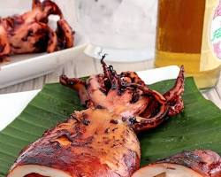

INGREDIENTS
- 4 medium squids, cleaned and prepped (remove internal organs, beak, and ink sac)
- 1/4 cup soy sauce
- 1/4 cup calamansi juice (or substitute with lemon juice)
- 2 cloves garlic, minced
- 1 small onion, chopped
- 1 red chili pepper, sliced (optional, adjust to preference)
- 1/2 teaspoon ground black pepper
- 1/4 teaspoon paprika (optional)
- Salt to taste
- Cooking oil for grilling
- 1 stalk lemongrass, white part only, thinly sliced(Optional)
- 1 inch ginger, julienned(Optional)
- 1/4 cup banana ketchup (for a sweeter marinade)
|

|
PROCEDURE
- Prepare the marinade: In a large bowl, combine soy sauce, calamansi juice, garlic, onion, chili pepper (if using), black pepper, paprika (if using), and salt. Mix well.
- Marinate the squid: Add the cleaned squid to the marinade and ensure they are coated evenly. Cover and refrigerate for at least 30 minutes, or up to overnight for deeper flavor.
- Preheat the grill: Prepare your grill for medium-high heat. Alternatively, you can use a stovetop grill pan.
- Grill the squid: Brush the squid lightly with oil and arrange them on the hot grill. Cook for 3-4 minutes per side, or until just cooked through and slightly charred. Do not overcook, as it will become tough.
- Optional serving suggestions:
- Squeeze fresh calamansi juice over the grilled squid.
- Serve with soy sauce with a dash of chili and vinegar for dipping.
- Enjoy with steamed rice and chopped tomatoes and onions.
|